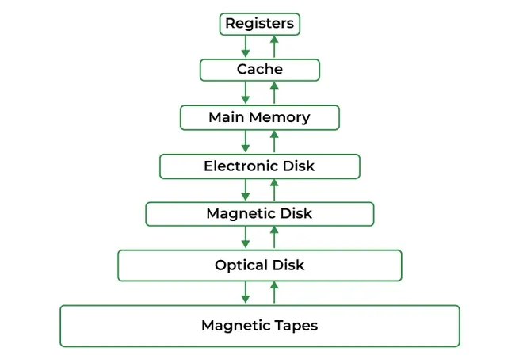

Memory management refers to how the operating system controls and organizes the computer's main memory (RAM) so that multiple programs can run at the same time. The operating system keeps track of which parts of memory are currently being used and which parts are available. When a program needs memory, the operating system allocates space for it, and when the program finishes, that memory can be freed and used by other processes. This helps ensure that programs do not interfere with each other and that the system uses memory efficiently.

Operating systems also use several techniques to improve how memory is used. Methods such as paging, segmentation, and virtual memory allow programs to use memory more efficiently and allow the computer to run programs that require more memory than the system physically has available. Data can be temporarily moved between RAM and other, slower storages when needed, allowing more processes to run at once. The operating system's control over memory and dynamic allocation of it provides both a versatile usage of the system's resources, as well as keeping a process's memory secure from other processes.
Sources: